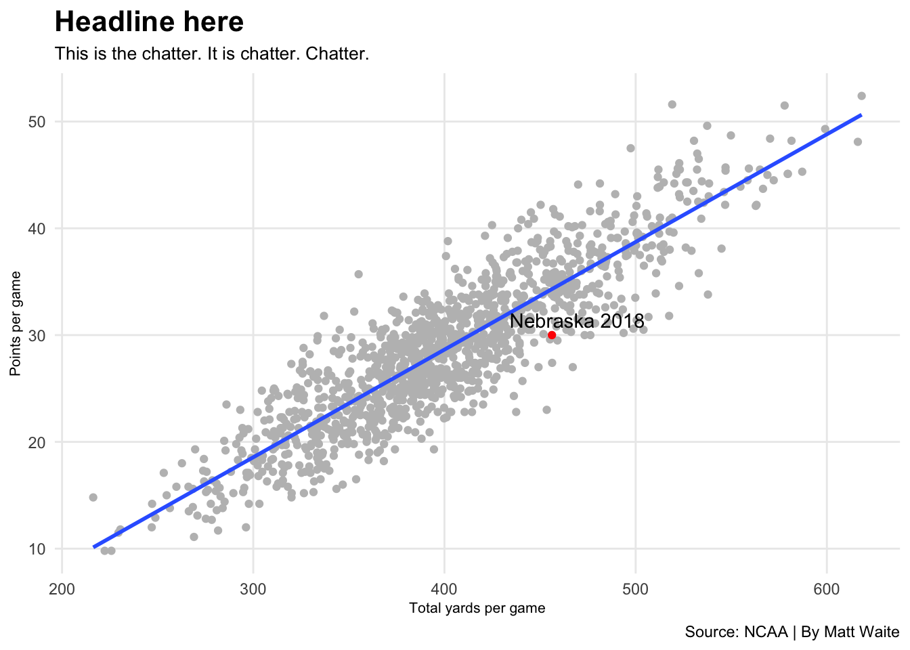

library(tidyverse)
library(ggrepel)31 Headlines
These are the pieces of a good graphic:
- Headline
- Chatter
- The main body
- Annotations
- Labels
- Source line
- Credit line
The first on that list is the first for a reason. The headline is an incredibly important part of any graphic: it’s often the first thing a reader will see. It’s got to entice people in, tell them a little bit about what they’re going to see, and help tell the story.
The second item is the chatter – the text underneath that headline. It needs to work with the headline to further the story, drive people toward the point, maybe add some context.
The two bits of text are extremely important. Let’s set up a chart and talk about how to do it wrong and how to do it better.
The data and the chart code isn’t important for you to follow along. The code is nothing special. The issues will be with the words that you’ll see below.
scoring <- read_csv("data/scoringoffense.csv")Rows: 1253 Columns: 10
── Column specification ────────────────────────────────────────────────────────
Delimiter: ","
chr (1): Name
dbl (9): G, TD, FG, 1XP, 2XP, Safety, Points, Points/G, Year
ℹ Use `spec()` to retrieve the full column specification for this data.
ℹ Specify the column types or set `show_col_types = FALSE` to quiet this message.total <- read_csv("data/totaloffense.csv")Rows: 1253 Columns: 9
── Column specification ────────────────────────────────────────────────────────
Delimiter: ","
chr (1): Name
dbl (8): G, Rush Yards, Pass Yards, Plays, Total Yards, Yards/Play, Yards/G,...
ℹ Use `spec()` to retrieve the full column specification for this data.
ℹ Specify the column types or set `show_col_types = FALSE` to quiet this message.offense <- total |> left_join(scoring, by=c("Name", "Year"))
nu <- offense |> filter(Name == "Nebraska") |> filter(Year == 2018)ggplot(offense, aes(x=`Yards/G`, y=`Points/G`)) +
geom_point(color="grey") + geom_smooth(method=lm, se=FALSE) +
labs(x="Total yards per game", y="Points per game", title="Headline here", subtitle="This is the chatter. It is chatter. Chatter.", caption="Source: NCAA | By Matt Waite") +
theme_minimal() +
theme(
plot.title = element_text(size = 16, face = "bold"),
axis.title = element_text(size = 8),
plot.subtitle = element_text(size=10),
panel.grid.minor = element_blank()
) +
geom_point(data=nu, aes(x=`Yards/G`, y=`Points/G`), color="red") +
geom_text_repel(data=nu, aes(x=`Yards/G`, y=`Points/G`, label="Nebraska 2018"))`geom_smooth()` using formula = 'y ~ x'
First, let’s start with some headline basics:
- Your headline should be about what the chart is about, not what makes up the chart. What story is the chart telling? What made it interesting to you? Don’t tell me what the stats are, tell me what it says.
- Your headline should be specific. Generic headlines are boring and ignored.
- Your headline should, most often, have a verb. It’s not a 100 percent requirement, but a headline without a verb means you’re trying to be cute and …
- Your headline shouldn’t be overly cute. Trying to get away with slang, a very Of The Moment cultural reference that will be forgotten soon, or some inside joke is asking for trouble.
- Your headline should provoke a reaction.
Given our graph, here’s a few that don’t work.
ggplot(offense, aes(x=`Yards/G`, y=`Points/G`)) +
geom_point(color="grey") + geom_smooth(method=lm, se=FALSE) +
labs(x="Total yards per game", y="Points per game", title="Nebraska's offense", subtitle="Nebraska's 2018 offense is the red dot.", caption="Source: NCAA | By Matt Waite") +
theme_minimal() +
theme(
plot.title = element_text(size = 16, face = "bold"),
axis.title = element_text(size = 8),
plot.subtitle = element_text(size=10),
panel.grid.minor = element_blank()
) +
geom_point(data=nu, aes(x=`Yards/G`, y=`Points/G`), color="red") +
geom_text_repel(data=nu, aes(x=`Yards/G`, y=`Points/G`, label="Nebraska 2018"))`geom_smooth()` using formula = 'y ~ x'The problems here:
- No verb.
- Generic, forgettable, doesn’t say anything.
- What is this chart about? What does it say? We have no idea from the headline and chatter.
- Don’t repeat words from the headline in the chatter. Nebraska Nebraska looks bad. Make one of the Huskers if you’re going to do this.
Another example:
ggplot(offense, aes(x=`Yards/G`, y=`Points/G`)) +
geom_point(color="grey") + geom_smooth(method=lm, se=FALSE) +
labs(x="Total yards per game", y="Points per game", title="Points per game vs total yards per game", subtitle="Nebraska's 2018 offense is below the blue line, which is bad.", caption="Source: NCAA | By Matt Waite") +
theme_minimal() +
theme(
plot.title = element_text(size = 16, face = "bold"),
axis.title = element_text(size = 8),
plot.subtitle = element_text(size=10),
panel.grid.minor = element_blank()
) +
geom_point(data=nu, aes(x=`Yards/G`, y=`Points/G`), color="red") +
geom_text_repel(data=nu, aes(x=`Yards/G`, y=`Points/G`, label="Nebraska 2018"))`geom_smooth()` using formula = 'y ~ x'What’s wrong here?
- The headline is about the stats, not the story.
- The headline lacks a verb.
- The headline lacks any interest, really.
- The headline at least moves in the direction of what this chart is about, but see the previous two.
- The chatter adds more flavor to it, but what does “below the blue line” even mean? We’re leaving the reader with a lot of questions and no real answers. That;s bad.
Let’s try to do this better.
ggplot(offense, aes(x=`Yards/G`, y=`Points/G`)) +
geom_point(color="grey") + geom_smooth(method=lm, se=FALSE) +
labs(x="Total yards per game", y="Points per game", title="Nebraska's strength?", subtitle="The Husker's offense was supposed to power the team. It underperformed.", caption="Source: NCAA | By Matt Waite") +
theme_minimal() +
theme(
plot.title = element_text(size = 16, face = "bold"),
axis.title = element_text(size = 8),
plot.subtitle = element_text(size=10),
panel.grid.minor = element_blank()
) +
geom_point(data=nu, aes(x=`Yards/G`, y=`Points/G`), color="red") +
geom_text_repel(data=nu, aes(x=`Yards/G`, y=`Points/G`, label="Nebraska 2018"))`geom_smooth()` using formula = 'y ~ x'What works here:
- Provokes a reaction by asking a question. Drives at what the story is about.
- The chatter answers the question in the headline without talking about the blue line, a model, anything. A reader can see it.
- Simple, precise, direct language.
One more, same chart.
ggplot(offense, aes(x=`Yards/G`, y=`Points/G`)) +
geom_point(color="grey") + geom_smooth(method=lm, se=FALSE) +
labs(x="Total yards per game", y="Points per game", title="Nebraska's offense underperformed", subtitle="The Husker's should have scored nearly a touchdown more given their output.", caption="Source: NCAA | By Matt Waite") +
theme_minimal() +
theme(
plot.title = element_text(size = 16, face = "bold"),
axis.title = element_text(size = 8),
plot.subtitle = element_text(size=10),
panel.grid.minor = element_blank()
) +
geom_point(data=nu, aes(x=`Yards/G`, y=`Points/G`), color="red") +
geom_text_repel(data=nu, aes(x=`Yards/G`, y=`Points/G`, label="Nebraska 2018"))`geom_smooth()` using formula = 'y ~ x'What works here:
- Strong verb: underperformed.
- Headline tells the story. Chatter bolsters it.
- Doesn’t repeat Nebraska or Huskers.
Taking time to sharpen your headlines will make your graphics better.